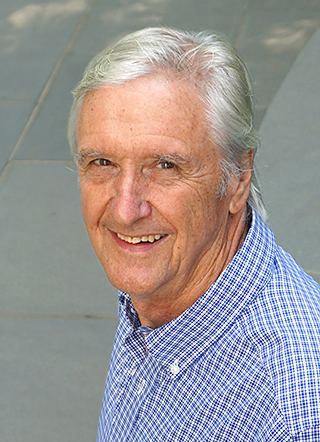

About

---do not take this text seriously, it is for structural purposes only---
---i am spitballing and having a laugh that is all---
P. Leslie Dutton (Les) (hence, Les Fest) is a super chill dude that had a ton of sick hangs with his lab buddies, so now that he's retiring they've
decided to have a symposium to honor all of his hard work as a scientist and mentor.
Now, you might be thinking,
"Woah! Being a scientist and a mentor is a lot of work, I bet Les didn't have time for hobbies," which would put you in the
wrong my friend. See, Les is also a very talented painter as you can see from this right here background image right here that
was painted by the great man himself.